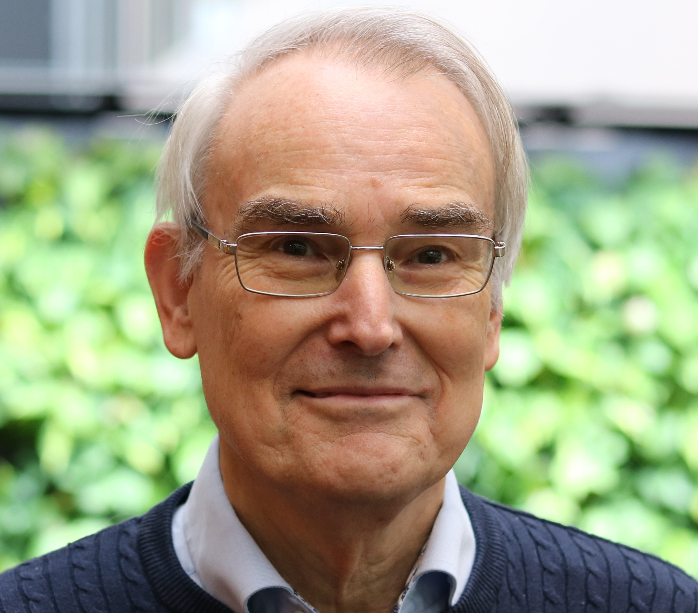

Robin Cooper
Position:
Robin Cooper is a Senior Researcher at CLASP and Professor emeritus of Computational Linguistics.
` `
` `
Webpage at University of Gothenburg: https://www.gu.se/en/about/find-staff/robincooper
Personal webpage: https://sites.google.com/view/robincooper/home
I am involved in the research groups:
I am working on the following externally funded projects:
- Dialogical Reasoning in Patients with Schizophrenia (DRiPS)
- Incremental Reasoning in Dialogue (IncReD)
- Gothenburg research initiative for politically emergent systems (GRIPES)
And then there’s a never-ending book project on TTR (a type theory with records). See https://sites.google.com/site/typetheorywithrecords for some literature on TTR.